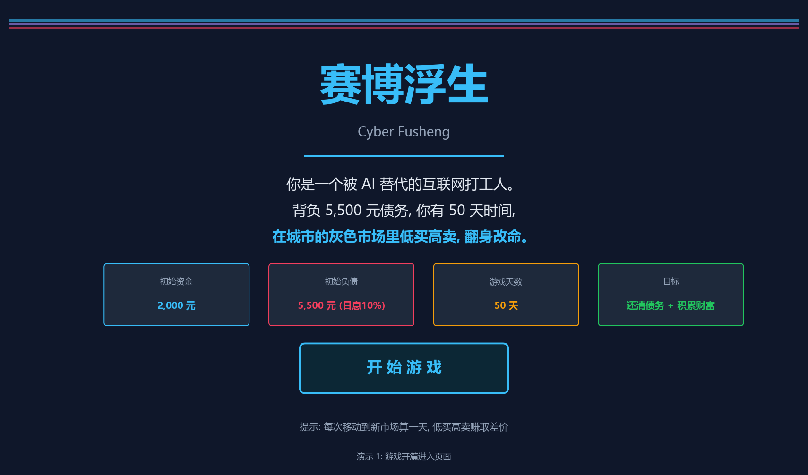
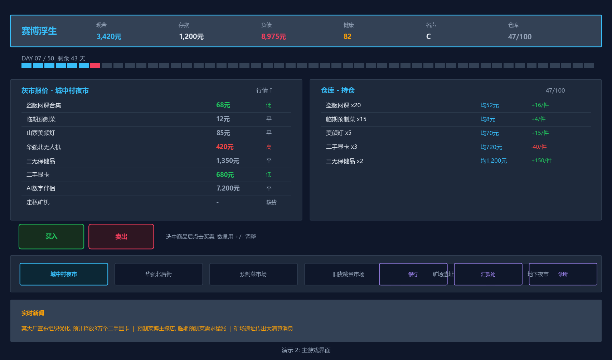
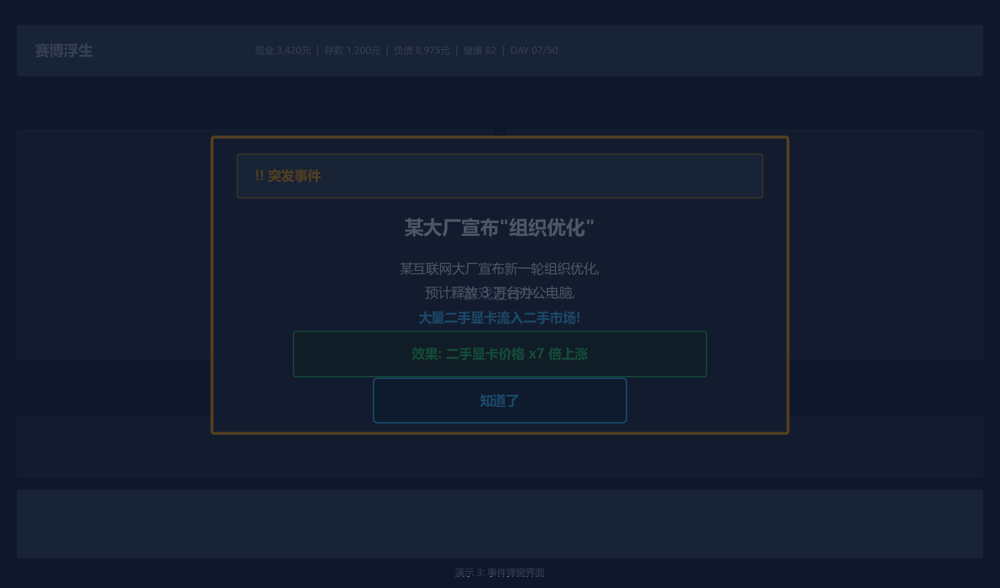
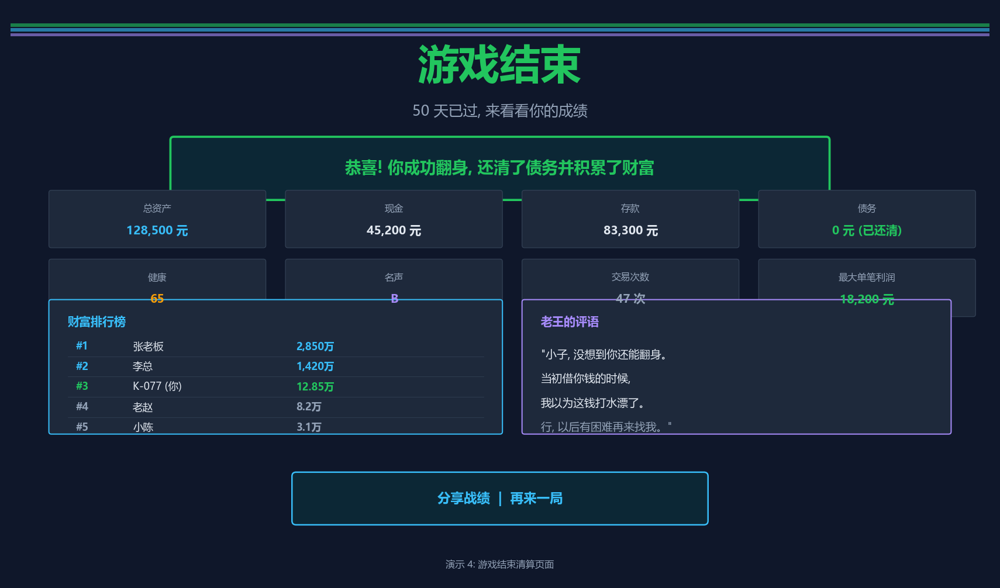

一款赛博题材的在线文字倒卖小游戏
50 天，一座城，一条活路
以下是游戏四个核心界面的演示草图，展示从开篇到结束的完整游戏流程。




《赛博浮生》是一款以近未来为背景的在线文字倒卖小游戏。玩家扮演一名被 AI 替代而失业的前互联网打工人，在 50 天内穿梭于城市的各个灰色市场，通过低买高卖积累财富，试图还清债务、翻身改命。游戏复刻经典 PC 小游戏《北京浮生记》的核心机制——地点切换、黑市买卖、随机事件、健康与名声系统——并将其移植到一个接地气的近未来设定中[1]。
AI 迭代迅猛，互联网行业裁员频发、焦虑盛行。游戏将这种时代情绪转化为"被裁后如何求生"的核心叙事张力。
数字精英与普通人的分化愈演愈烈，游戏通过不同市场的物价差异与事件，让玩家感受这种割裂。
SBTI 以自嘲解构 MBTI 破圈刷屏，证明非技术作者借助 vibe coding 也能做出现象级产品。本游戏追求同样的"会心一笑"式传播力。
20 年前的纯文字倒卖游戏，仅靠"买低卖高 + 随机事件"就极具耐玩性。其极简而耐玩的设计理念是本作要继承的精髓[1]。
游戏的原始创意和机制比技术堆砌更重要。一个设计得当的文字小游戏，同样能带来沉浸感与"会心一笑"。《赛博浮生》用 最克制的交互 承载 最接地气的时代隐喻——不硬核、不架空，让玩家笑着玩、玩着想。
快节奏时代，一局游戏控制在 15-20 分钟，碎片化即可游玩，适应通勤、摸鱼场景。
物品价格与事件全随机，每局体验完全不同，"入门容易、精通难"，反复挑战追求更高排名。
事件文案以生活化的幽默风格撰写，紧贴当代互联网文化与现实梗，引发玩家共鸣与社交分享欲。
故事发生在不远的将来。AI 技术已经深度渗透各行各业，互联网行业经历了几轮"算法替代潮"——先是内容创作者被生成式 AI 替代，接着是程序员被代码大模型压缩岗位，最后连运营、设计也未能幸免。大量"前互联网打工人"涌入灰色市场，靠倒腾各种物资谋生。这不是一个赛博朋克式的反乌托邦，而是一个有点荒诞、有点心酸、但又充满烟火气的"下岗再就业"故事。
AI 裁员潮 / 灰色市场 / 倒买倒卖 / 下岗再就业 / 互联网梗
玩家扮演的主角代号 "K-077"，曾是一名互联网大厂的内容运营（也可选择程序员/设计师等职业，仅影响开局文案），在最新一轮裁员潮中被"优化"离开公司。离开时，他背着前老板 老王 的 5,500 元 债务——这是他入职时为购买办公设备借的。这笔债务每天的利息高达 10%，如果不及时还清，老王会叫人来"聊天"，玩家可能在大街上被人堵住。
初始资金 2,000 元，负债 5,500 元（日息 10%）。50 天内必须还清债务并积累到目标财富值，否则游戏失败——主角将被彻底贴上"失败者"标签，灰溜溜回老家。目标值：10 万元（普通）/ 50 万元（困难）/ 200 万元（地狱）。
游戏发生在一座熟悉又陌生的城市。玩家活动范围是城市中的 六个灰色市场，对应北京浮生记中的"二环地铁各黑市"。北京浮生记原版有 8 个地点，本作精简为 6 个，降低认知负担，保持足够的套利空间。
| 区域 | 前身份 | 市场氛围 | 对标北京浮生记 |
|---|---|---|---|
| 城中村夜市 | 旧城中村拆迁后的露天夜市 | 低端杂货集散地，新手友好，盗版网课、临期食品的天下 | 西直门 |
| 华强北后街 | 电子市场背后的巷子 | 电子灰市，二手显卡、无人机、各种寨货出没地 | 东直门 |
| 预制菜批发市场 | 倒闭的食品加工厂仓库 | 临期预制菜、保健品批发，价格便宜量又大 | 崇文门 |
| 旧货跳蚤市场 | 废弃停车场改造 | 二手杂货大杂烩，啥都有，啥都可能涨价 | 建国门 |
| 矿场遗址 | 倒闭的虚拟币矿场 | 二手显卡、矿机残骸淘宝地，风险与机遇并存 | 复兴门 |
| 地下夜市 | 地下防空洞改造 | 高端灰产，AI 伴侣、走私大件，高风险高利润 | 和平门 |
六个市场中还散布着三个"重要场所"，提供市场交易之外的关键服务。北京浮生记原版有六个场所（银行、邮局、医院、机场、租房中介、网吧），本作精简为三个最核心的，去掉机场（国际贸易）、租房中介（仓库扩容）和网吧（上网），让游戏更聚焦。
| 场所 | 功能 | 对标北京浮生记 |
|---|---|---|
| 银行 | 存取款，利息 1%/天。存款可规避大部分"亏钱事件"对现金的影响 | 银行 |
| 汇款处 | 向老王还债。还清后可查看老王对你的最终评价（结局评语） | 邮局 |
| 诊所 | 恢复健康值。健康归零则游戏结束 | 医院 |
北京浮生记原版有"租房中介"可以租更大的房子（初始容纳 100 件，可升级）。本作去掉了这个机制，仓库容量固定为 100 单位。这样设计让游戏更简洁，玩家注意力集中在"买卖策略"本身。100 件的容量对 50 天的游戏周期已经足够。
核心玩法忠实复刻《北京浮生记》的"地点切换 + 低买高卖 + 随机事件"三角循环[1]。下文逐一对照原型说明本作的机制设计。
玩家在六个市场之间移动，每到一处新市场算作"过了一天"，总共 50 天。每到新市场，观察该市场物价，与手中库存比对：低价时买入、高价时卖出，赚取差价。循环往复，直到 50 天结束或达成目标。
| 机制模块 | 北京浮生记（原型） | 赛博浮生（本作改造） |
|---|---|---|
| 时间限制 | 40 天，每次移动算一天 | 50 天，每次移动算一天 |
| 初始资金 | 2,000 元 | 2,000 元 |
| 初始负债 | 欠村长 5,500 元，日息 10% | 欠老王 5,500 元，日息 10% |
| 交易场所 | 北京二环 8 个地铁黑市 | 城市 6 个灰色市场 |
| 仓库上限 | 出租屋初始 100 件 | 仓库固定 100 单位（不可扩容） |
| 价格波动 | 各物品基准价位随机浮动 | 同机制 |
| 随机事件 | 商业/健康/亏钱三类 | 商业/健康/亏钱/馈赠四类 |
| 名声系统 | 倒卖假酒/禁书降名声 | 倒卖三无保健品/AI伴侣降名声 |
| 银行 | 存取款，1% 利息 | 同机制 |
| 还债场所 | 邮局还钱给村长 | 汇款处还钱给老王 |
| 医院 | 恢复健康 | 诊所恢复健康 |
| 结算排名 | 北京富人榜 Top10 | 财富排行榜 Top10 |
每件商品有一个基准价位区间。每当玩家抵达新市场，系统为该市场的每件商品随机生成一个当前价格（在基准区间内波动）。不同市场的同款商品价格不同，制造套利空间。部分商品的波动幅度更大（如走私矿机），是发大财也是亏大钱的标的。
开局负债 5,500 元，日息 10%（复利）。若不及时还款，债务会滚雪球式增长。玩家可在"汇款处"随时部分或全额还款。还清全部债务后，老王会给出一段评价——根据玩家这局的表现，给出一段或讽刺或欣慰的评语。
健康值 0-100，初始 100。遭遇健康类事件（吃坏肚子、被人撞了、被城管追等）会扣减健康。健康归零 = 角色身体撑不住了，游戏失败。可在"诊所"花费金钱恢复健康。
初始名声为 C 级。倒卖违禁品（三无保健品、AI 数字伴侣）会快速降低名声。名声过低时，部分市场会对你加价或拒绝交易。名声高则可解锁特殊事件与更好价格。金钱再多、名声太低也算不上"成功人士"。
胜利：50 天结束时，总资产（现金 + 存款 - 债务）≥ 目标财富值，根据资产数额进入财富排行榜。
失败：① 50 天结束未达标；② 健康归零；③ 债务滚到老王"强制收债阈值"（如初始负债的 5 倍）且无力偿还。
复刻原版"入门容易、精通难"的特质。新手靠低买高卖即可赚到十万级；但要突破百万、冲击排行榜，需要对各类商品基准价位的熟悉、对随机事件商机的捕捉、银行存款与现金的平衡、健康与名声的维护。
依靠银行及时存钱 / 循序渐进敢冒风险 / 多种经营降低风险 / 勿贪勿执壮士断臂 / 保重身体呵护健康 / 注意名声名利双收 / 不畏艰难勤恳钻研。
将原版八类商品逐一映射到近未来的灰色市场。每件商品保留原版的"基准价位 + 波动区间 + 特殊属性"结构，并赋予接地气的设定与趣味文案。商品名紧贴当代互联网文化与现实梗，让玩家会心一笑。商品按风险与利润分为四个层级。
| 层级 | 商品名 | 对标原版 | 基准价位 | 波动特点 | 特殊属性 |
|---|---|---|---|---|---|
| T1 入门 | 盗版网课合集 | 盗版 VCD | 50-150 元 | 波动小 | 便宜易进货，单笔利润薄。严打时暴跌 8 倍 |
| T1 入门 | 临期预制菜 | 进口香烟 | 8-20 元 | 波动适中 | 价格便宜量又大。博主探店时可暴涨 |
| T2 中端 | 山寨直播美颜灯 | 伪劣化妆品 | 60-120 元 | 偶发暴涨 | 网红带货翻车或爆火时价格剧变 4-7 倍 |
| T2 中端 | 华强北无人机 | 进口玩具 | 300-500 元 | 波动较大 | 华强北出新货时暴跌 7 倍，禁飞令解除时暴涨 |
| T3 高利 | 三无保健品 | 假白酒 | 1,000-1,600 元 | 波动大 | 暴利但名声速降。查出违禁成分反而被疯抢涨 7 倍 |
| T3 高利 | 二手显卡 | 水货手机 | 600-1,200 元 | 可暴涨 7 倍 | 挖矿热潮时飙至 8,000 元，矿崩时暴跌 |
| T4 禁忌 | AI 数字伴侣 | 禁书 | 6,000-9,000 元 | 可暴涨 8 倍 | AI 觉醒备份，灰色地带产品。暴利但名声暴跌 |
| T4 禁忌 | 走私矿机 | 走私汽车 | 15,000-25,000 元 | 波动最剧烈 | 可涨 8 倍。发大财的理想标的，但风险最大，占 5 单位仓库 |
每个层级对应原版从低端到高端的利润梯度：T1 适合前期原始积累，T2 提供事件博弈机会，T3-T4 是中后期发大财的主力但伴随名声与健康代价。商品名如"临期预制菜""二手显卡""华强北无人机"等，紧贴当代生活，让玩家在倒卖中感受到浓浓的现实烟火气。
随机事件是游戏的灵魂，让每局体验截然不同。本作复刻原版事件机制并新增"馈赠"类，共四类随机事件。每次移动到新市场时有概率触发。事件文案以生活化的幽默风格撰写，紧贴当代互联网梗与现实日常。
PRICE UP / PRICE DOWN 影响特定商品的价格涨跌，是玩家捕捉商机发财的关键。
HEALTH 影响玩家健康值，吃坏肚子、被城管追、踩到废铁等。
MONEY LOSS 让辛苦挣来的钱减少，路边下棋输钱、共享单车扣押金等。
GIFT 免费获得物品，老乡资助、矿场捡漏等意外之财。
| 事件文案 | 效果 | 对标原版 |
|---|---|---|
| 某网红直播翻车，美颜灯被群嘲"照妖镜" | 美颜灯 x7 | 谢不疯说我用伪劣化妆品 |
| 网课平台严打盗版，盗版网课全网下架 | 网课 x4 | 不如盗版 VCD 港台片 |
| 预制菜博主探店，临期预制菜突然爆火 | 预制菜 x4 | 提倡爱美落到实处 |
| 华强北又出新一批寨货无人机 | 无人机 x7跌 | 中关村全是卖 VCD 的村姑 |
| 保健品查出违禁成分，反而被大爷大妈疯抢 | 保健品 x7 | 北京有人狂饮山西假酒 |
| 挖矿热潮再起！二手显卡一卡难求 | 显卡 x7 | 大学生找工作手机涨 7 倍 |
| 大厂宣布 AI 伴侣侵权，全网下架 | AI伴侣 x8 | 8858.com 不敢卖禁书 |
| 某大厂宣布"组织优化"，大量显卡流入二手市场 | 显卡 x7跌 | 市场充斥走私香烟 |
| 网课平台出新规，盗版网课价格暴跌 | 网课 x8跌 | 中关村全是卖 VCD |
| 矿场大清算，矿机价格腰斩 | 矿机 x7跌 | 市场充斥走私香烟 |
| 直播带货风口又起，美颜灯供不应求 | 美颜灯 x4 | 提倡爱美落到实处 |
| 无人区开放低空飞行，无人机需求暴涨 | 无人机 x3 | 专家提议提高动手素质 |
| 事件文案 | 效果 | 对标原版 |
|---|---|---|
| 城中村巷子被外卖电动车撞了一下 | 健康 -3 | 两个流氓打了俺 |
| 吃了过期预制菜，拉了一晚上肚子 | 健康 -5 | 胡同小青年砸俺一砖头 |
| 矿场遗址踩到生锈的铁钉 | 健康 -10 | 一群民工打了俺 |
| 被城管追了三条街 | 健康 -1 | 工商局追俺超过三个胡同 |
| 华强北人挤人，脑壳被撞了 | 健康 -1 | 北京拥挤交通让俺心焦 |
| 二手显卡漏电，被电了一下 | 健康 -3 | 两个假保安用电棍电击俺 |
| 地下夜市空气太差，头昏脑涨 | 健康 -1 | 北京臭黑的小河熏着我了 |
| 高温天在外面跑，中暑了 | 健康 -1 | 北京高温 40 度 |
| 在旧货市场被掉下来的杂物砸了 | 健康 -5 | 胡同小青年砸俺一砖头 |
| 被老王的人堵住揍了一顿 | 健康 -20 | 过街地道被人打了闷棍 |
| 事件文案 | 效果 | 对标原版 |
|---|---|---|
| 路边大爷拉你下棋，输了 200 块 | 现金 -10% | 汉子街头拦住给点钱 |
| 共享单车扣了押金一直没退 | 现金 -10% | 怜悯乞丐老太太 |
| 买预制菜被老板多收了钱 | 现金 -5% | 去氧吧吸氧 |
| 被假和尚拦住要"结缘" | 现金 -10% | 街头拦住给点钱 |
| 一个大个子碰了我一下："别挤了！" | 现金 -40% | 大个子碰了一下别挤了 |
| 被穿马甲的"志愿者"罚款："占道经营！" | 现金 -20% | 带红袖章老太太罚款 |
| 收到催收短信，存款被扣了一笔 | 存款 -15% | 交各种附加费 |
| 帮人代购被坑了定金 | 存款 -10% | 副主任别来送钱 |
| 事件文案 | 效果 | 对标原版 |
|---|---|---|
| 老乡回老家前把两台矿机送给了我 | +2 矿机 | 厦门老同学资助两部走私汽车 |
| 矿场倒闭，捡到 6 块二手显卡 | +6 显卡 | 工商局扫荡后发现香烟 |
| 邻居搬走，留了几箱临期预制菜 | +7 预制菜 | 老乡把假白酒给俺 |
| 前同事被裁，把一堆盗版网课硬盘甩给了我 | +8 网课 | 老乡把假白酒给俺 |
| 某品牌产品出事故！老王把高价显卡强卖给我 | 被迫高价买入 | 日本产品出事故，村长高价强卖手机 |
界面布局忠实复刻《北京浮生记》的经典分区，将原版的"黑市/出租屋/状态/地点/新闻"五区结构，改造为"灰市/仓库/状态栏/市场导航/实时新闻"五区结构。核心原则：一屏容纳所有信息，零跳转完成核心操作。
| 分区 | 北京浮生记（原型） | 赛博浮生（本作） | 位置 |
|---|---|---|---|
| 状态栏 | 金钱、存款、健康、名声 | 现金、存款、负债、健康、名声、仓库进度 | 顶部横条 |
| 灰市 | 黑市物品及价格列表 | 当前市场商品及实时报价 | 左半区 |
| 仓库 | 出租屋中的库存及买进价 | 仓库中的库存及持仓均价 | 右半区 |
| 买卖操作 | 买进/卖出按钮 | 买入/卖出按钮 + 数量选择 | 中部操作栏 |
| 市场导航 | 二环地铁各站点击移动 | 六市场点击移动（消耗一天） | 底部导航条 |
| 重要场所 | 银行/邮局/医院/机场/中介/网吧 | 银行/汇款处/诊所 | 底部导航条 |
| 实时新闻 | 实时新闻滚动条 | 实时新闻/事件播报滚动条 | 最底部 |
一屏全览：所有核心信息集中在顶部状态栏，无需翻页。左右对照：左侧灰市报价与右侧持仓均价同屏对照，一眼看出盈亏。底部双行：第一行为六市场移动导航，第二行为三个重要场所入口。价格色标：绿色 = 高于均价（卖出时机），红色 = 低于均价（买入时机）。
基于以上设计，建议采用敏捷迭代开发，分三个阶段交付。
主界面 HUD + 六市场移动 + 八类商品买卖 + 基础随机事件 + 胜负判定。纯前端实现，本地存储存档。验证核心循环是否有趣。
三个重要场所全部功能 + 全部随机事件库 + 名声系统 + 排行榜。可接入后端做云端存档。
结局分享卡片、SBTI 式人格标签结算（"你是哪种灰市商人"）、好友排行榜。追求病毒传播。
作为一款文字小游戏，技术栈越轻越好。推荐纯前端 SPA（Vue/React 均可），状态管理用简单的 store 即可。随机数与事件系统是核心逻辑，建议独立为纯函数模块以便测试。美术资源以 CSS + 少量图标为主——"文字即画面"正是本作的美学主张。
《赛博浮生》的竞争力不在技术，而在 机制的经典性 与 文本的共鸣感。北京浮生记证明了"低买高卖 + 随机事件"这个极简机制本身就足够耐玩；本作要做的，是用近未来的外壳，装进当代人的真实日常——被裁的焦虑、倒腾二手显卡的刺激、买临期预制菜的心酸。当玩家读到"某大厂宣布组织优化，大量显卡流入二手市场"这条新闻时，会心一笑之余，那一丝心酸，就是游戏想要传递的东西。